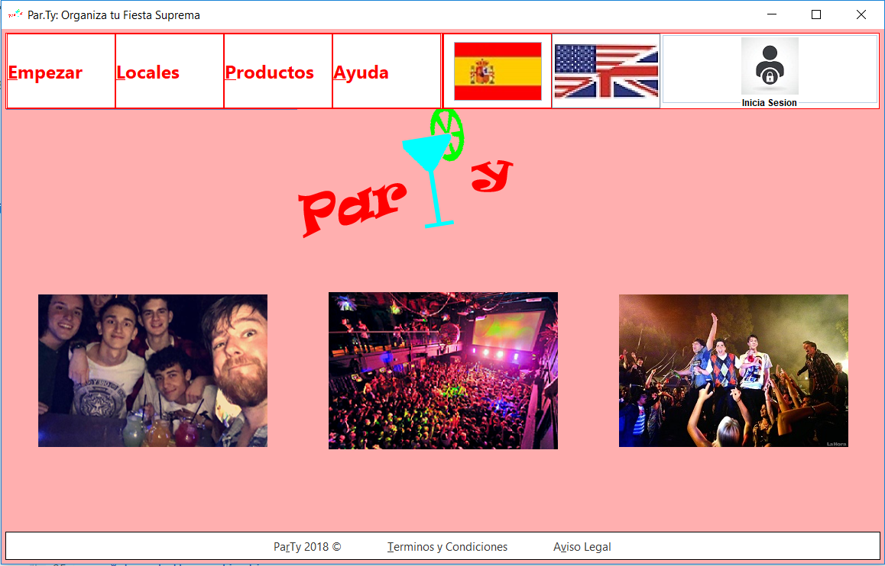

ParTy: Organizador de fiestas
ParTy es una aplicacion sencilla que te ayudara a montar la mejor fiesta posible para cualquier persona en el mundo,
con un amplio nivel de categorias ha sido nombrada como la mejor aplicacion de fiestas de toda la EII en 2018.

Las opciones para empezar a organizar la fiesta son las siguientes:
- Empezar: Con esta opcion comenzaras indicando el numero de invitados que acudiran a tu fiesta.
- Locales: Con esta opcion comenzaras indicando el local deseado para tu fiesta pudiendo elegir los invitados mas tarde.
- Productos: Con esta opcion iras directamente al catologo de productos del que disponemos para realizar tu fiesta.
- Bandera Española: Aqui podras indicar si tu idioma es español y elegirlo como idioma para la aplicacion.
- Bandera Inglesa: Aqui indicar si tu idioma es ingles y elegirlo como idioma para la aplicacion.
- Iniciar Sesion: Aqui podras iniciar sesion o registrarte para disrutar de las grandes ventajas de formar parte de nuestra comunidad.